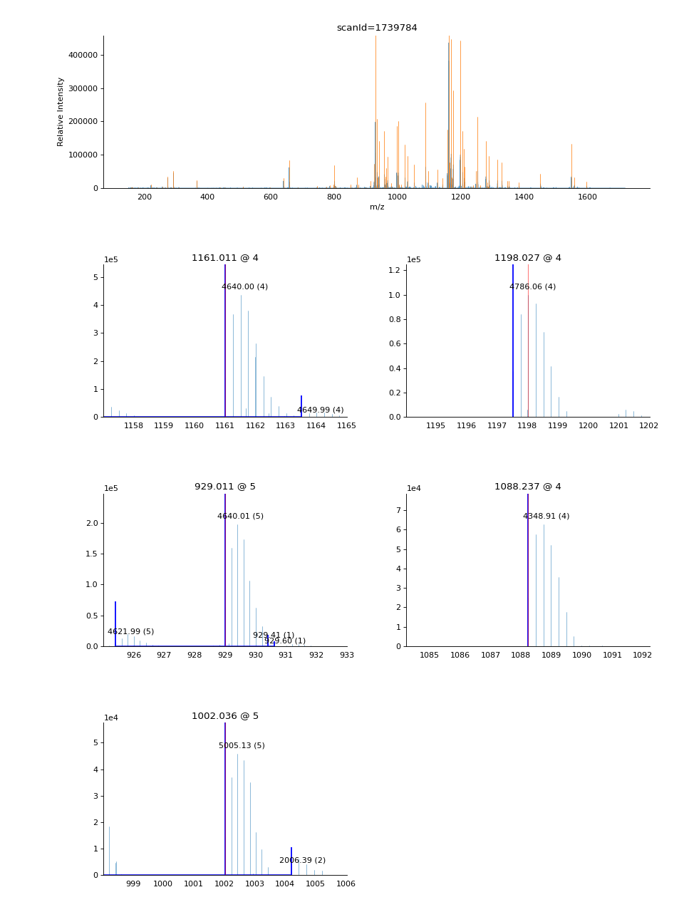

Visualizing Mass Spectra¶
The ms_deisotope.plot module contains several plotting functions for visualizing
mass spectra using matplotlib.
A collection of tools for drawing and annotating mass spectra
import ms_deisotope
from ms_deisotope import plot
from ms_deisotope.test.common import datafile
reader = ms_deisotope.MSFileLoader(datafile("20150710_3um_AGP_001_29_30.mzML.gz"))
bunch = next(reader)
# create a profile spectrum
for peak in bunch.precursor.pick_peaks():
peak.full_width_at_half_max = 0.02
scan = bunch.precursor.reprofile(dx=0.001)
ax = plot.draw_raw(scan.arrays, color='black', lw=0.5)
ax.set_xlim(1160, 1165)
ax.figure.set_figwidth(12)
ax.set_title("Raw Profile Plot", fontsize=16)
scan.pick_peaks()
ax = plot.draw_peaklist(scan.peak_set, color='black')
ax.set_xlim(1160, 1165)
ax.figure.set_figwidth(12)
ax.set_title("Centroid Peak Plot", fontsize=16)

{kind=link}
{kind=link}
{kind=link}
{kind=link}
Basic Spectrum Drawing¶
ms_deisotope.plot.draw_raw(mz_array, intensity_array=None, ax=None, normalize=False, **kwargs)[source]¶Draws un-centroided profile data, visualizing continuous data points
Parameters:
- mz_array (
np.ndarrayortuple) – Either the m/z array to be visualized, or if intensity_array is None, mz_array will be unpacked, looking to find a sequence of two np.ndarray objects for the m/z (X) and intensity (Y) coordinates- intensity_array (
np.ndarray, optional) – The intensity array to be visualized. If None, will attempt to unpack mz_array- ax (
matplotlib.Axes, optional) – The axis to draw the plot on. If missing, a new one will be created usingmatplotlib.pyplot.subplots()- pretty (bool, optional) – If True, will call
_beautify_axes()on ax- normalize (bool, optional) – if True, will normalize the abundance dimension to be between 0 and 100%
- **kwargs – Passed to
matplotlib.Axes.plot()Returns: Return type:
Axes
ms_deisotope.plot.draw_peaklist(peaklist, ax=None, normalize=False, **kwargs)[source]¶Draws centroided peak data, visualizing peak apexes.
The peaks will be converted into a single smooth curve using
peaklist_to_vector().
Parameters:
- peaklist (
IterableofPeakLike) – The peaks to draw.- ax (matplotlib.Axes, optional) – The axis to draw the plot on. If missing, a new one will be created using
matplotlib.pyplot.subplots()- pretty (bool, optional) – If True, will call
_beautify_axes()on ax- normalize (bool, optional) – if True, will normalize the abundance dimension to be between 0 and 100%
- **kwargs – Passed to
matplotlib.Axes.plot()Returns: Return type: matplotlib.Axes
Annotating Peaks and Envelopes¶
ms_deisotope.plot.annotate_isotopic_peaks(scan, ax=None, color_cycle=None, **kwargs)[source]¶Mark distinct isotopic peaks from the
DeconvolutedPeakSetinscan.import ms_deisotope from ms_deisotope import plot from ms_deisotope.test.common import datafile reader = ms_deisotope.MSFileLoader(datafile("20150710_3um_AGP_001_29_30.mzML.gz")) bunch = next(reader) bunch.precursor.pick_peaks() bunch.precursor.deconvolute( scorer=ms_deisotope.PenalizedMSDeconVFitter(20., 2.0), averagine=ms_deisotope.glycopeptide, use_quick_charge=True) ax = plot.draw_peaklist(bunch.precursor, color='black') ax = plot.annotate_isotopic_peaks(bunch.precursor, ax=ax) ax.set_xlim(1160, 1165) ax.figure.set_figwidth(12)(Source code, png, hires.png, pdf)

Parameters:
- scan (ScanBase) – The scan to annotate
- color_cycle (
Iterable) – An iterable to draw isotopic cluster colors from- ax (
matplotlib._axes.Axes) – AnAxesobject to draw the plot onReturns: Return type:
matplotlib._axes.Axes
ms_deisotope.plot.label_peaks(scan, min_mz=None, max_mz=None, ax=None, is_deconvoluted=None, threshold=None, **kwargs)[source]¶Label a region of the peak list, marking centroids with their m/z or mass. If the peaks of scan have been deconvoluted, the most abundant peak will be annotated with “<neutral mass> (<charge>)”, otherwise just “<m/z>”.
Parameters:
- scan (
ScanBase) – The scan to annotate- min_mz (float, optional) – The minimum m/z to annotate
- max_mz (float, optional) – The maximum m/z to annotate
- ax (
matplotlib._axes.Axes) – AnAxesobject to draw the plot on- is_deconvoluted (bool, optional) – Whether or not to always use
Scan.deconvoluted_peak_set- threshold (float, optional) – The intensity threshold under which peaks will be ignored
Returns:
- ax (
matplotlib._axes.Axes) – The axes the plot was drawn on- annotations (
listofmatplotlib.text.Text) – The list ofmatplotlib.text.Textannotations
ms_deisotope.plot.annotate_scan_single(scan, product_scan, ax=None, label=True, standalone=True)[source]¶Draw a zoomed-in view of the MS1 spectrum
scansurrounding the area around each precursor ion that gave rise toproduct_scanwith monoisotopic peaks and isolation windows marked.import ms_deisotope from ms_deisotope import plot from ms_deisotope.test.common import datafile reader = ms_deisotope.MSFileLoader(datafile("20150710_3um_AGP_001_29_30.mzML.gz")) bunch = next(reader) bunch.precursor.pick_peaks() bunch.precursor.deconvolute( scorer=ms_deisotope.PenalizedMSDeconVFitter(20., 2.0), averagine=ms_deisotope.glycopeptide, use_quick_charge=True) ax = plot.annotate_scan_single(bunch.precursor, bunch.products[0]) ax.figure.set_figwidth(12)(Source code, png, hires.png, pdf)

Parameters:
- scan (ScanBase) – The MS1 scan to annotate
- product_scan (ScanBase) – The product scan to annotate the precursor ion of
- ax (
matplotlib._axes.Axes) – AnAxesobject to draw the plot onReturns: Return type:
matplotlib._axes.Axes
ms_deisotope.plot.annotate_scan(scan, products, nperrow=4, ax=None, label=True)[source]¶Given an MS1
ScanBasescanand aSequenceofScanBaseproduct scans, draw the MS1 spectrum in full profile, and then in a subplot grid below it, draw a zoomed-in view of the MS1 spectrum surrounding the area around each precursor ion that gave rise to the scans inproducts, with monoisotopic peaks and isolation windows marked.import ms_deisotope from ms_deisotope import plot from ms_deisotope.test.common import datafile reader = ms_deisotope.MSFileLoader(datafile("20150710_3um_AGP_001_29_30.mzML.gz")) bunch = next(reader) bunch.precursor.pick_peaks() bunch.precursor.deconvolute( scorer=ms_deisotope.PenalizedMSDeconVFitter(20., 2.0), averagine=ms_deisotope.glycopeptide, use_quick_charge=True) ax = plot.annotate_scan(bunch.precursor, bunch.products, nperrow=2) ax.figure.set_figwidth(12) ax.figure.set_figheight(16)(Source code, png, hires.png, pdf)

Parameters:
- scan (ScanBase) – The precursor MS1 scan
- products (
SequenceofScanBase) – The collection of MSn scans based uponscan- nperrow (int) – The number of precursor ion subplots to draw per row of the grid. Defaults to
4.- ax (
matplotlib._axes.Axes) – AnAxesobject to use to find the figure to draw the plot on.Returns: The axes of the full MS1 profile plot
Return type:
matplotlib._axes.Axes
{kind=link}
{kind=link}
{kind=link}
{kind=link}
{kind=link}
{kind=link}